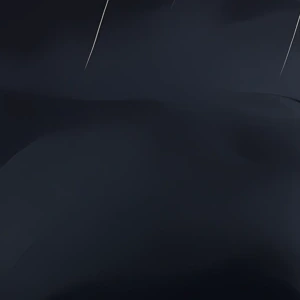
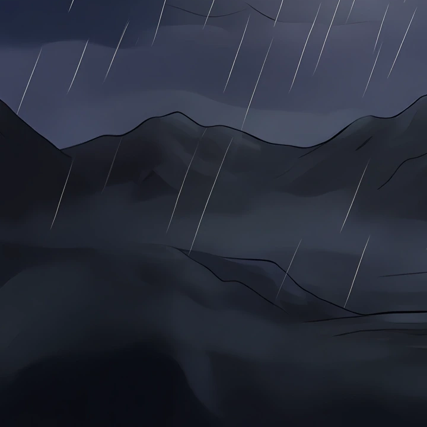
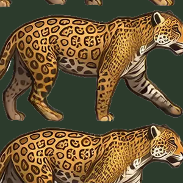
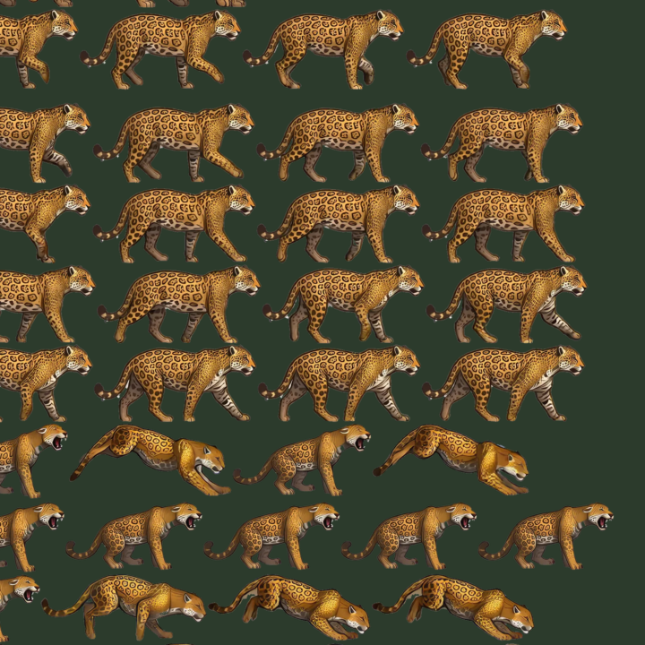
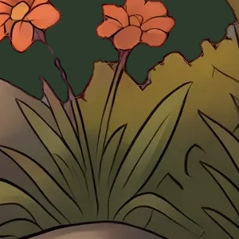
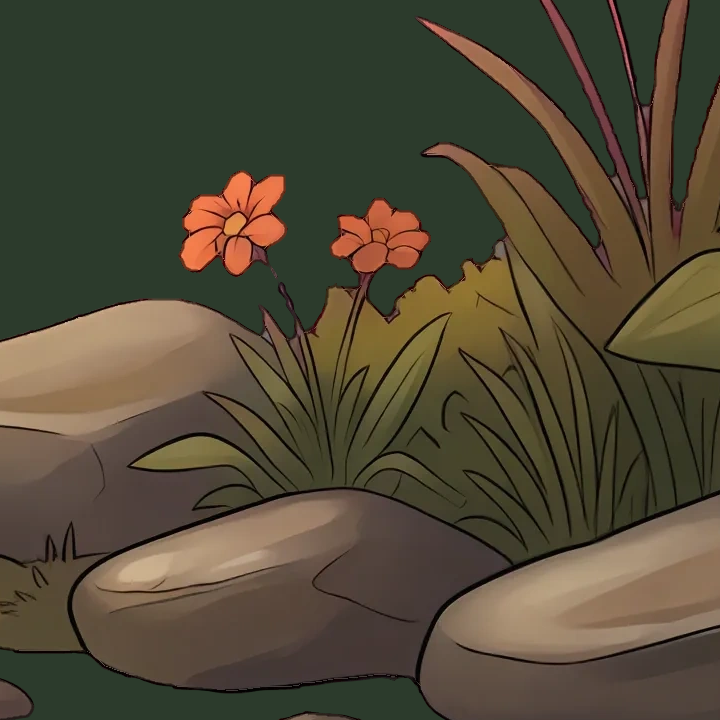
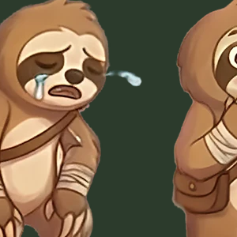
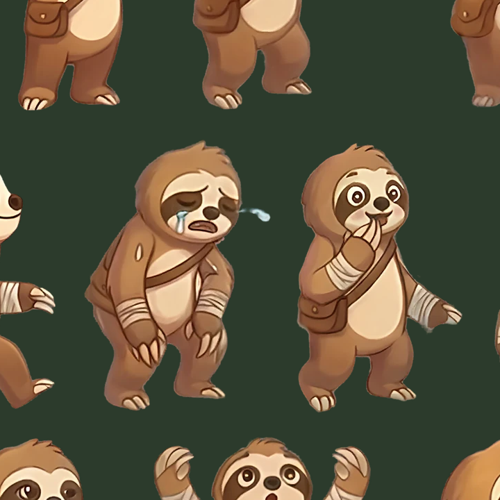
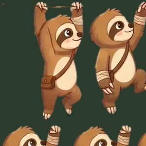
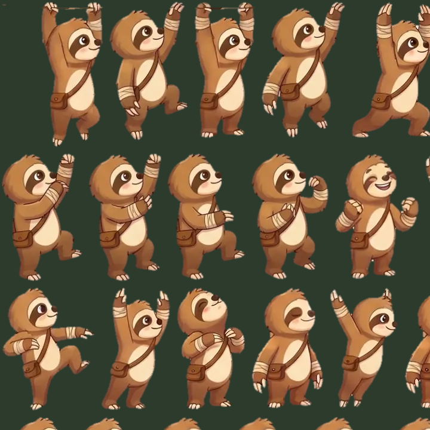

<title>Sloths Compression Trials</title>
<meta name="claude:viewport-fit-sides" content="cover">
<link rel="stylesheet" href="https://fonts.googleapis.com/css2?family=Fraunces:opsz,wght@9..144,600&family=Inter:wght@400;600;700&family=JetBrains+Mono&display=swap">
<style>
/* layout: one column of case studies; each case has a setting switcher that swaps every picture in place (flip to compare) */
:root{--bg:#f3f5f1;--panel:#ffffff;--fg:#1d241d;--muted:#5d6a5c;--line:#d5dbd2;--accent:#2f6b3a;--warn:#9a5b00;--ok:#2f6b3a;
--display:'Fraunces',Georgia,serif;--body:'Inter',system-ui,sans-serif;--mono:'JetBrains Mono',ui-monospace,monospace;color-scheme:light}
@media (prefers-color-scheme:dark){:root:not([data-theme="light"]){--bg:#141914;--panel:#1c231c;--fg:#e6ece4;--muted:#9aa898;--line:#2f3a2f;--accent:#8fd19b;--warn:#e7b25a;--ok:#8fd19b;color-scheme:dark}}
:root[data-theme="dark"]{--bg:#141914;--panel:#1c231c;--fg:#e6ece4;--muted:#9aa898;--line:#2f3a2f;--accent:#8fd19b;--warn:#e7b25a;--ok:#8fd19b;color-scheme:dark}
body{background:var(--bg);color:var(--fg);font:15px/1.55 var(--body);padding-left:max(16px,env(safe-area-inset-left,0px));padding-right:max(16px,env(safe-area-inset-right,0px));padding-block:20px 48px}
main{max-width:980px;margin:0 auto;display:flex;flex-direction:column;gap:28px}
h1,h2{font-family:var(--display);font-weight:600;text-wrap:balance;margin:0}
h1{font-size:2rem;line-height:1.15}h2{font-size:1.35rem}
p{margin:0;max-width:68ch}.muted{color:var(--muted)}
.lede{display:flex;flex-direction:column;gap:10px}
.case,.panel{background:var(--panel);border:1px solid var(--line);border-radius:10px;padding:16px;display:flex;flex-direction:column;gap:12px;min-width:0}
.seg{display:flex;flex-wrap:wrap;gap:6px}
.seg button{font:600 13px var(--body);border:1px solid var(--line);background:transparent;color:var(--fg);border-radius:999px;padding:8px 14px;min-height:40px;cursor:pointer}
.seg button[aria-pressed="true"]{background:var(--accent);border-color:var(--accent);color:var(--panel)}
.seg button:focus-visible{outline:2px solid var(--accent);outline-offset:2px}
.views{display:grid;grid-template-columns:repeat(auto-fit,minmax(260px,1fr));gap:12px}
figure{margin:0;display:flex;flex-direction:column;gap:6px;min-width:0}
figure img{display:block;width:100%;height:auto;border-radius:6px;background:#2c3b2c;image-rendering:auto}
figure.px img{image-rendering:pixelated}
figcaption{font-size:12px;color:var(--muted)}
.stat{font:13px var(--mono);font-variant-numeric:tabular-nums}
.tw{overflow-x:auto}
table{border-collapse:collapse;font-variant-numeric:tabular-nums;font-size:13px;width:100%}
th,td{text-align:right;padding:6px 8px;border-bottom:1px solid var(--line);white-space:nowrap}
th:first-child,td:first-child{text-align:left}
th{font-weight:600;color:var(--muted);font-size:12px;letter-spacing:.03em;text-transform:uppercase}
.pick{color:var(--ok);font-weight:700}
audio{width:100%}
.clips{display:grid;grid-template-columns:repeat(auto-fit,minmax(220px,1fr));gap:10px}
</style>
<main>
<section class="lede"><h1>Shrinking Sloths without a visible loss</h1>
<p>Task AS-1, measured on the live 0.9.6 build (585ef376). The live game is 176.9 MB: images 112.8 MB (597 WebP), music 53.6 MB (113 .webm, all Opus audio: the game ships no video), sound 5.5 MB, code 4.2 MB. The art is already lossy WebP at about q80 to q95. My pick: re-encode only the files stored above about q83 at q82, and record the music again at 64/56/32 kb/s. Together that saves about 26 MB with no change I can see on a phone.</p>
<p class="muted">Each case: tap a setting to swap every picture in place. Flipping between Original and a setting is the fastest way to see a change. <b>1:1</b> is the stored pixels (a resized file is scaled back up: the worst case). <b>Phone</b> is a phone-width window at the largest size the game draws it in play (measured by playing 30 stages and 30 story screens, upright and sideways, at full picture quality; never larger than its stored size). <b>Error x8</b> shows where the codec changed pixels.</p></section>
<section class="panel"><h2>The whole game at each setting</h2><div class="tw"><table><thead><tr><th>Setting</th><th>Images MB</th><th>Music MB</th><th>Saved MB</th><th>Web MB</th><th>App MB</th></tr></thead><tbody><tr><td>Today (0.9.6)</td><td>112.8</td><td>53.6</td><td>0.0</td><td>176.9</td><td>188.0</td></tr><tr><td>Art q90, music M1</td><td>110.7</td><td>43.8</td><td>11.8</td><td>165.1</td><td>176.2</td></tr><tr><td>Art q82, music M1 (pick)</td><td>96.1</td><td>43.8</td><td>26.4</td><td>150.5</td><td>161.6</td></tr><tr><td>Art q82, music M2</td><td>96.1</td><td>38.4</td><td>31.8</td><td>145.1</td><td>156.2</td></tr><tr><td>Art q75, music M3</td><td>81.1</td><td>32.9</td><td>52.4</td><td>124.5</td><td>135.6</td></tr></tbody></table></div>
<p class="muted">Art: every shipped WebP encoded at each setting (libwebp method 6, lossless alpha); a file already at or below a setting is kept as is. 7 small files the game draws at under a quarter of their size are also halved or cut to 75%. Music: measured size ratios from fresh recordings of 10 pieces and one stage&#x27;s stems, applied to all 113 files. App size assumes the APK shrinks by the same bytes (WebP and Opus don&#x27;t compress further inside it).</p></section>
<section class="case" data-key="night-sky" data-stats='{&quot;original&quot;: &quot;111 KB \u00b7 2194x1302 \u00b7 as shipped \u00b7 PSNR \u221e dB \u00b7 worst 8x8 block 0.0&quot;, &quot;q90&quot;: &quot;111 KB \u00b7 2194x1302 \u00b7 kept as is (already about q91) \u00b7 PSNR \u221e dB \u00b7 worst 8x8 block 0.0&quot;, &quot;q82&quot;: &quot;60 KB \u00b7 2194x1302 \u00b7 WebP q82 \u00b7 PSNR 48.13 dB \u00b7 worst 8x8 block 4.2&quot;, &quot;q75&quot;: &quot;47 KB \u00b7 2194x1302 \u00b7 WebP q75 \u00b7 PSNR 46.8 dB \u00b7 worst 8x8 block 5.7&quot;}' data-files='{&quot;original&quot;: &quot;original&quot;, &quot;q90&quot;: &quot;original&quot;, &quot;q82&quot;: &quot;q82&quot;, &quot;q75&quot;: &quot;q75&quot;}'>
<h2>Night sky gradient</h2>
<p>World 10 far layer (storm clouds, a lightning glow): where banding shows first. The sky layers themselves are already about q83, so q82 leaves them as they are.</p>
<p class="muted stat">src/assets/backdrops/w10-far.webp · 2194x1302 · shipped at about q91 · drawn at its stored size or larger in play (not over-stored)</p>
<div class="seg" role="group" aria-label="Setting"><button type="button" id="b-night-sky-original" data-v="original" aria-pressed="true">Original</button><button type="button" id="b-night-sky-q90" data-v="q90" aria-pressed="false">q90</button><button type="button" id="b-night-sky-q82" data-v="q82" aria-pressed="false">q82</button><button type="button" id="b-night-sky-q75" data-v="q75" aria-pressed="false">q75</button></div>
<p class="stat sel">111 KB · 2194x1302 · as shipped · PSNR ∞ dB · worst 8x8 block 0.0</p>
<div class="views">
<figure class="px"><figcaption>1:1, 300 px of the stored picture</figcaption></figure>
<figure><figcaption>Phone size (720x720 device px)</figcaption></figure>
<figure class="px"><figcaption>Error x8 against the original (black is no change)</figcaption></figure>
</div></section>
<section class="case" data-key="fur-sheet" data-stats='{&quot;original&quot;: &quot;1.27 MB \u00b7 2048x2554 \u00b7 as shipped \u00b7 PSNR \u221e dB \u00b7 worst 8x8 block 0.0&quot;, &quot;q90&quot;: &quot;1.27 MB \u00b7 2048x2554 \u00b7 kept as is (already about q81) \u00b7 PSNR \u221e dB \u00b7 worst 8x8 block 0.0&quot;, &quot;q82&quot;: &quot;1.27 MB \u00b7 2048x2554 \u00b7 kept as is (already about q81) \u00b7 PSNR \u221e dB \u00b7 worst 8x8 block 0.0&quot;, &quot;q75&quot;: &quot;1.13 MB \u00b7 2048x2554 \u00b7 WebP q75 \u00b7 PSNR 31.43 dB \u00b7 worst 8x8 block 10.9&quot;}' data-files='{&quot;original&quot;: &quot;original&quot;, &quot;q90&quot;: &quot;original&quot;, &quot;q82&quot;: &quot;original&quot;, &quot;q75&quot;: &quot;q75&quot;}'>
<h2>Fur-heavy animation sheet</h2>
<p>The jaguar: where smeared fur shows first.</p>
<p class="muted stat">src/assets/enemies/jaguar-anim.webp · 2048x2554 · shipped at about q81 · drawn at most 0.48x its stored size in play</p>
<div class="seg" role="group" aria-label="Setting"><button type="button" id="b-fur-sheet-original" data-v="original" aria-pressed="true">Original</button><button type="button" id="b-fur-sheet-q90" data-v="q90" aria-pressed="false">q90</button><button type="button" id="b-fur-sheet-q82" data-v="q82" aria-pressed="false">q82</button><button type="button" id="b-fur-sheet-q75" data-v="q75" aria-pressed="false">q75</button></div>
<p class="stat sel">1.27 MB · 2048x2554 · as shipped · PSNR ∞ dB · worst 8x8 block 0.0</p>
<div class="views">
<figure class="px"><figcaption>1:1, 300 px of the stored picture</figcaption></figure>
<figure><figcaption>Phone size (720x720 device px)</figcaption></figure>
<figure class="px"><figcaption>Error x8 against the original (black is no change)</figcaption></figure>
</div></section>
<section class="case" data-key="backdrop" data-stats='{&quot;original&quot;: &quot;460 KB \u00b7 3416x1736 \u00b7 as shipped \u00b7 PSNR \u221e dB \u00b7 worst 8x8 block 0.0&quot;, &quot;q90&quot;: &quot;369 KB \u00b7 3416x1736 \u00b7 WebP q90 \u00b7 PSNR 42.44 dB \u00b7 worst 8x8 block 4.2&quot;, &quot;q82&quot;: &quot;301 KB \u00b7 3416x1736 \u00b7 WebP q82 \u00b7 PSNR 39.25 dB \u00b7 worst 8x8 block 7.6&quot;, &quot;q75&quot;: &quot;265 KB \u00b7 3416x1736 \u00b7 WebP q75 \u00b7 PSNR 35.28 dB \u00b7 worst 8x8 block 12.0&quot;}' data-files='{&quot;original&quot;: &quot;original&quot;, &quot;q90&quot;: &quot;q90&quot;, &quot;q82&quot;: &quot;q82&quot;, &quot;q75&quot;: &quot;q75&quot;}'>
<h2>Backdrop</h2>
<p>World 2 near layer, the biggest backdrop.</p>
<p class="muted stat">src/assets/backdrops/w2-near.webp · 3416x1736 · shipped at about q94 · drawn at its stored size or larger in play (not over-stored)</p>
<div class="seg" role="group" aria-label="Setting"><button type="button" id="b-backdrop-original" data-v="original" aria-pressed="true">Original</button><button type="button" id="b-backdrop-q90" data-v="q90" aria-pressed="false">q90</button><button type="button" id="b-backdrop-q82" data-v="q82" aria-pressed="false">q82</button><button type="button" id="b-backdrop-q75" data-v="q75" aria-pressed="false">q75</button></div>
<p class="stat sel">460 KB · 3416x1736 · as shipped · PSNR ∞ dB · worst 8x8 block 0.0</p>
<div class="views">
<figure class="px"><figcaption>1:1, 300 px of the stored picture</figcaption></figure>
<figure><figcaption>Phone size (720x720 device px)</figcaption></figure>
<figure class="px"><figcaption>Error x8 against the original (black is no change)</figcaption></figure>
</div></section>
<section class="case" data-key="story-frame" data-stats='{&quot;original&quot;: &quot;584 KB \u00b7 1998x1718 \u00b7 as shipped \u00b7 PSNR \u221e dB \u00b7 worst 8x8 block 0.0&quot;, &quot;q90&quot;: &quot;584 KB \u00b7 1998x1718 \u00b7 kept as is (already about q89) \u00b7 PSNR \u221e dB \u00b7 worst 8x8 block 0.0&quot;, &quot;q82&quot;: &quot;461 KB \u00b7 1998x1718 \u00b7 WebP q82 \u00b7 PSNR 38.13 dB \u00b7 worst 8x8 block 6.5&quot;, &quot;q75&quot;: &quot;398 KB \u00b7 1998x1718 \u00b7 WebP q75 \u00b7 PSNR 35.94 dB \u00b7 worst 8x8 block 8.2&quot;}' data-files='{&quot;original&quot;: &quot;original&quot;, &quot;q90&quot;: &quot;original&quot;, &quot;q82&quot;: &quot;q82&quot;, &quot;q75&quot;: &quot;q75&quot;}'>
<h2>Story picture</h2>
<p>Pokey, story HD. It stands in for a story video frame: the game ships no video.</p>
<p class="muted stat">src/assets/story/hd/pokey-1.webp · 1998x1718 · shipped at about q89 · drawn at its stored size or larger in play (not over-stored)</p>
<div class="seg" role="group" aria-label="Setting"><button type="button" id="b-story-frame-original" data-v="original" aria-pressed="true">Original</button><button type="button" id="b-story-frame-q90" data-v="q90" aria-pressed="false">q90</button><button type="button" id="b-story-frame-q82" data-v="q82" aria-pressed="false">q82</button><button type="button" id="b-story-frame-q75" data-v="q75" aria-pressed="false">q75</button></div>
<p class="stat sel">584 KB · 1998x1718 · as shipped · PSNR ∞ dB · worst 8x8 block 0.0</p>
<div class="views">
<figure class="px"><figcaption>1:1, 300 px of the stored picture</figcaption></figure>
<figure><figcaption>Phone size (720x720 device px)</figcaption></figure>
<figure class="px"><figcaption>Error x8 against the original (black is no change)</figcaption></figure>
</div></section>
<section class="case" data-key="pokey-sheet" data-stats='{&quot;original&quot;: &quot;523 KB \u00b7 1536x1918 \u00b7 as shipped \u00b7 PSNR \u221e dB \u00b7 worst 8x8 block 0.0&quot;, &quot;q90&quot;: &quot;523 KB \u00b7 1536x1918 \u00b7 kept as is (already about q79) \u00b7 PSNR \u221e dB \u00b7 worst 8x8 block 0.0&quot;, &quot;q82&quot;: &quot;523 KB \u00b7 1536x1918 \u00b7 kept as is (already about q79) \u00b7 PSNR \u221e dB \u00b7 worst 8x8 block 0.0&quot;, &quot;q75&quot;: &quot;476 KB \u00b7 1536x1918 \u00b7 WebP q75 \u00b7 PSNR 37.49 dB \u00b7 worst 8x8 block 7.1&quot;}' data-files='{&quot;original&quot;: &quot;original&quot;, &quot;q90&quot;: &quot;original&quot;, &quot;q82&quot;: &quot;original&quot;, &quot;q75&quot;: &quot;q75&quot;}'>
<h2>Pokey&#x27;s sheet</h2>
<p>hero-standard: dark outlines, where ringing shows first.</p>
<p class="muted stat">src/assets/hero/hero-standard.webp · 1536x1918 · shipped at about q79 · drawn at its stored size or larger in play (not over-stored)</p>
<div class="seg" role="group" aria-label="Setting"><button type="button" id="b-pokey-sheet-original" data-v="original" aria-pressed="true">Original</button><button type="button" id="b-pokey-sheet-q90" data-v="q90" aria-pressed="false">q90</button><button type="button" id="b-pokey-sheet-q82" data-v="q82" aria-pressed="false">q82</button><button type="button" id="b-pokey-sheet-q75" data-v="q75" aria-pressed="false">q75</button></div>
<p class="stat sel">523 KB · 1536x1918 · as shipped · PSNR ∞ dB · worst 8x8 block 0.0</p>
<div class="views">
<figure class="px"><figcaption>1:1, 300 px of the stored picture</figcaption></figure>
<figure><figcaption>Phone size (720x720 device px)</figcaption></figure>
<figure class="px"><figcaption>Error x8 against the original (black is no change)</figcaption></figure>
</div></section>
<section class="case" data-key="ui-icon" data-stats='{&quot;original&quot;: &quot;15 KB \u00b7 192x192 \u00b7 as shipped \u00b7 PSNR \u221e dB \u00b7 worst 8x8 block 0.0&quot;, &quot;q90&quot;: &quot;15 KB \u00b7 192x192 \u00b7 kept as is (already about q91) \u00b7 PSNR \u221e dB \u00b7 worst 8x8 block 0.0&quot;, &quot;q82&quot;: &quot;11 KB \u00b7 192x192 \u00b7 WebP q82 \u00b7 PSNR 34.94 dB \u00b7 worst 8x8 block 7.8&quot;, &quot;q75&quot;: &quot;10 KB \u00b7 192x192 \u00b7 WebP q75 \u00b7 PSNR 32.77 dB \u00b7 worst 8x8 block 11.0&quot;}' data-files='{&quot;original&quot;: &quot;original&quot;, &quot;q90&quot;: &quot;original&quot;, &quot;q82&quot;: &quot;q82&quot;, &quot;q75&quot;: &quot;q75&quot;}'>
<h2>UI icon</h2>
<p>The gear: small, flat colour and hard edges.</p>
<p class="muted stat">src/assets/icons/gear.webp · 192x192 · shipped at about q91 · drawn at most 0.81x its stored size in play</p>
<div class="seg" role="group" aria-label="Setting"><button type="button" id="b-ui-icon-original" data-v="original" aria-pressed="true">Original</button><button type="button" id="b-ui-icon-q90" data-v="q90" aria-pressed="false">q90</button><button type="button" id="b-ui-icon-q82" data-v="q82" aria-pressed="false">q82</button><button type="button" id="b-ui-icon-q75" data-v="q75" aria-pressed="false">q75</button></div>
<p class="stat sel">15 KB · 192x192 · as shipped · PSNR ∞ dB · worst 8x8 block 0.0</p>
<div class="views">
<figure class="px"><figcaption>1:1, 300 px of the stored picture</figcaption></figure>
<figure><figcaption>Phone size (156x156 device px)</figcaption></figure>
<figure class="px"><figcaption>Error x8 against the original (black is no change)</figcaption></figure>
</div></section>
<section class="panel"><h2>Music (the .webm files are music, not video)</h2>
<p>The music is rendered by the game&#x27;s own synth (tools/music/record.mjs), so a smaller file means recording again at a lower bitrate (one lossy pass), not squeezing today&#x27;s Opus files. M1 = 64 kb/s for full mixes, 56 for stereo stems, 32 for one-channel stems (today 80 / 64 / 40). Below M1 the 8-12 kHz band, where the shimmer and cymbals live, loses detail fast.</p>
<div class="tw"><table><thead><tr><th>Piece</th><th>80 kb/s</th><th>64 kb/s</th><th>56 kb/s</th><th>48 kb/s</th></tr></thead><tbody><tr><td>ending.mix</td><td>1.20 MB<br><span class='muted'>-25.2 / -14.8 dB</span></td><td>988 KB<br><span class='muted'>-22.4 / -12.9 dB</span></td><td>868 KB<br><span class='muted'>-21.7 / -12.3 dB</span></td><td>743 KB<br><span class='muted'>-20.7 / -11.4 dB</span></td></tr><tr><td>jennifur.mix</td><td>1.21 MB<br><span class='muted'>-25.1 / -14.4 dB</span></td><td>990 KB<br><span class='muted'>-22.1 / -12.7 dB</span></td><td>871 KB<br><span class='muted'>-21.3 / -12.1 dB</span></td><td>745 KB<br><span class='muted'>-20.3 / -11.1 dB</span></td></tr><tr><td>map-3.mix</td><td>1.10 MB<br><span class='muted'>-27.3 / -13.0 dB</span></td><td>898 KB<br><span class='muted'>-24.5 / -12.3 dB</span></td><td>786 KB<br><span class='muted'>-23.9 / -11.8 dB</span></td><td>671 KB<br><span class='muted'>-22.9 / -10.7 dB</span></td></tr><tr><td>score_bloom.mix</td><td>1.18 MB<br><span class='muted'>-27.3 / -21.2 dB</span></td><td>976 KB<br><span class='muted'>-24.2 / -18.1 dB</span></td><td>864 KB<br><span class='muted'>-23.4 / -16.9 dB</span></td><td>746 KB<br><span class='muted'>-22.3 / -16.3 dB</span></td></tr><tr><td>score_finale.mix</td><td>1.16 MB<br><span class='muted'>-25.7 / -14.9 dB</span></td><td>956 KB<br><span class='muted'>-22.7 / -13.2 dB</span></td><td>841 KB<br><span class='muted'>-21.9 / -12.5 dB</span></td><td>717 KB<br><span class='muted'>-20.9 / -11.8 dB</span></td></tr><tr><td>score_mercy.mix</td><td>1.09 MB<br><span class='muted'>-26.9 / -14.8 dB</span></td><td>902 KB<br><span class='muted'>-23.8 / -13.1 dB</span></td><td>793 KB<br><span class='muted'>-23.0 / -12.5 dB</span></td><td>678 KB<br><span class='muted'>-21.9 / -11.7 dB</span></td></tr><tr><td>signature.mix</td><td>1.19 MB<br><span class='muted'>-26.1 / -13.5 dB</span></td><td>970 KB<br><span class='muted'>-23.3 / -12.5 dB</span></td><td>849 KB<br><span class='muted'>-22.6 / -11.8 dB</span></td><td>726 KB<br><span class='muted'>-21.7 / -10.7 dB</span></td></tr><tr><td>storyDusk.mix</td><td>1.33 MB<br><span class='muted'>-24.9 / -15.2 dB</span></td><td>1.08 MB<br><span class='muted'>-22.2 / -13.5 dB</span></td><td>969 KB<br><span class='muted'>-21.5 / -12.8 dB</span></td><td>828 KB<br><span class='muted'>-20.5 / -11.7 dB</span></td></tr><tr><td>storyStorm.mix</td><td>1.02 MB<br><span class='muted'>-25.8 / -13.5 dB</span></td><td>837 KB<br><span class='muted'>-22.7 / -11.8 dB</span></td><td>736 KB<br><span class='muted'>-21.7 / -11.3 dB</span></td><td>629 KB<br><span class='muted'>-20.7 / -10.4 dB</span></td></tr><tr><td>world9~c.mix</td><td>1.20 MB<br><span class='muted'>-25.2 / -16.5 dB</span></td><td>988 KB<br><span class='muted'>-22.1 / -14.6 dB</span></td><td>868 KB<br><span class='muted'>-21.4 / -13.3 dB</span></td><td>741 KB<br><span class='muted'>-20.4 / -12.6 dB</span></td></tr></tbody></table></div>
<p class="muted">Under each size: the noise against the source recording below 4 kHz / 4-8 kHz (STFT error, dB, lower is cleaner). A measure, not a listen: the clips below are for ears, on headphones.</p>
<div class="clips"><figure><audio controls preload="none" src="audio/storyDusk.mix.ref192k.webm"></audio><figcaption>Story Dusk, full mix, 192 kb/s reference</figcaption></figure><figure><audio controls preload="none" src="audio/storyDusk.mix.80k.webm"></audio><figcaption>Story Dusk, full mix, 80 kb/s (today)</figcaption></figure><figure><audio controls preload="none" src="audio/storyDusk.mix.64k.webm"></audio><figcaption>Story Dusk, full mix, 64 kb/s (M1, pick)</figcaption></figure><figure><audio controls preload="none" src="audio/storyDusk.mix.56k.webm"></audio><figcaption>Story Dusk, full mix, 56 kb/s (M2)</figcaption></figure><figure><audio controls preload="none" src="audio/storyDusk.mix.48k.webm"></audio><figcaption>Story Dusk, full mix, 48 kb/s (M3)</figcaption></figure><figure><audio controls preload="none" src="audio/stage-w3.shine.ref128k.webm"></audio><figcaption>World 3 shimmer stem, 128 kb/s reference</figcaption></figure><figure><audio controls preload="none" src="audio/stage-w3.shine.40k.webm"></audio><figcaption>World 3 shimmer stem, 40 kb/s (today)</figcaption></figure><figure><audio controls preload="none" src="audio/stage-w3.shine.32k.webm"></audio><figcaption>World 3 shimmer stem, 32 kb/s (M1, pick)</figcaption></figure><figure><audio controls preload="none" src="audio/stage-w3.shine.28k.webm"></audio><figcaption>World 3 shimmer stem, 28 kb/s (M2)</figcaption></figure><figure><audio controls preload="none" src="audio/stage-w3.shine.24k.webm"></audio><figcaption>World 3 shimmer stem, 24 kb/s (M3)</figcaption></figure></div></section>
</main><script>
document.querySelectorAll('.case').forEach(function (c) {
  var key = c.dataset.key, stats = JSON.parse(c.dataset.stats), files = JSON.parse(c.dataset.files), sel = c.querySelector('.sel');
  c.querySelectorAll('.seg button').forEach(function (b) {
    b.addEventListener('click', function () {
      var v = b.dataset.v;
      c.querySelectorAll('.seg button').forEach(function (x) { x.setAttribute('aria-pressed', String(x === b)); });
      c.querySelectorAll('img[data-kind]').forEach(function (im) { im.src = key + '.' + files[v] + '.' + im.dataset.kind + '.png'; });
      sel.textContent = stats[v];
    });
  });
});
</script>